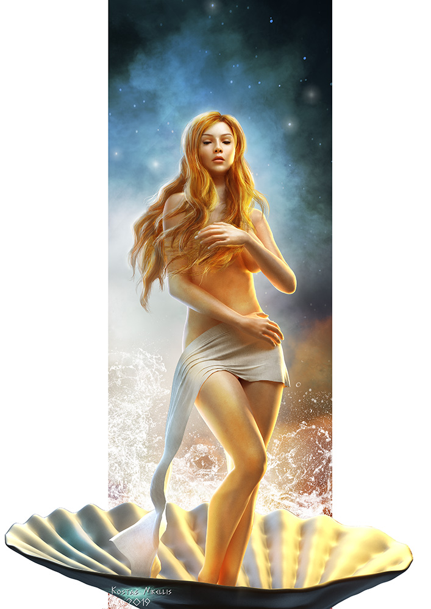

VENUS
La atmósfera más caliente

Venus es el segundo planeta del sistema solar en orden de proximidad
al Sol y el tercero en cuanto a tamaño en orden ascendente después de
Mercurio y Marte. Al igual que Mercurio, carece de satélites naturales.
Al ser el segundo objeto natural más brillante después de la Luna, puede
ser visto en un cielo nocturno despejado a simple vista. Se trata de un
planeta interior de tipo rocoso y terrestre, llamado con frecuencia el
planeta hermano de la Tierra, ya que ambos son similares en cuanto a tamaño,
masa y composición, aunque totalmente diferentes en cuestiones térmicas y
atmosféricas (la temperatura media de Venus es de 463,85 ºC)
Venus sigue un patrón muy especial en su danza alrededor del sol el cual
forma una especial geometría... puedes verlo en el siguiente video:
NOMBRE Y MITOLOGÍA
Recibe su nombre en honor a Venus, la diosa romana del amor (gr. Afrodita). Venus es el astro más característico en los cielos de la mañana y de la tarde de la Tierra (después del Sol y la Luna), y es conocido desde la prehistoria. Uno de los documentos más antiguos que sobreviven de la biblioteca babilónica de Asurbanipal, datado sobre el 1600 a. C., es un registro de 21 años del aspecto de Venus (que los primeros babilonios llamaron Nindaranna). Los antiguos sumerios y babilonios llamaron a Venus «Dil-bat» o «Dil-i-pat»; en la ciudad mesopotámica de Akkad era la estrella de la madre-diosa Ishtar, y en chino su nombre es «Jīn-xīng» (金星), el planeta del elemento metal. Venus se consideró como el más importante de los cuerpos celestes observados por los mayas, que lo llamaron «Chak ek» (la gran estrella). En Grecia antigua pensaban que las apariciones matutinas y vespertinas de Venus eran de dos cuerpos diferentes, y les llamaron Hesperus cuando aparecía en el cielo del Oeste al atardecer, y Phosphorus cuando aparecía en el cielo del Este al amanecer.
